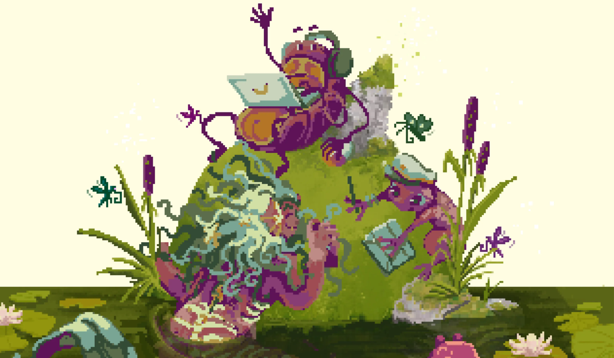

In May 2025, as a part of DADA board, me and my board-members were organising the Game Jam.
The topic was Metamorphosis and I collaborated with a fellow board-member to create a appropriate visuals.
I was in charge of the colour palette and character visuals.
02/03/26.txt
Website Launch!
GitHub is fun to get ahold of , but was a bit comfusing! Tho blog format is pretty fun!